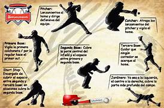

La función esencial del béisbol es puramente competitiva y estratégica: se trata de un juego de conquista y defensa del territorio donde el objetivo final es anotar más carreras que el rival para ganar el partido.
Para el equipo que ataca, la función de cada turno es poner la pelota en juego mediante el bateo para avanzar de forma segura por las tres bases (primera, segunda y tercera) hasta regresar al punto de partida (el home). Cada circuito completo que realiza un jugador representa una carrera. Para el equipo que defiende, la función es totalmente destructiva respecto al avance rival: su meta es coordinar los lanzamientos y las atrapadas para eliminar a tres bateadores o corredores contrarios (conseguir tres outs), lo que les permite terminar el peligro y cambiar de turno para poder pasar a la ofensiva. En última instancia, la función del juego es resolver un duel de estrategia y habilidad física entre el lanzador y el bateador para dominar las entradas del partido sin la presión de un reloj